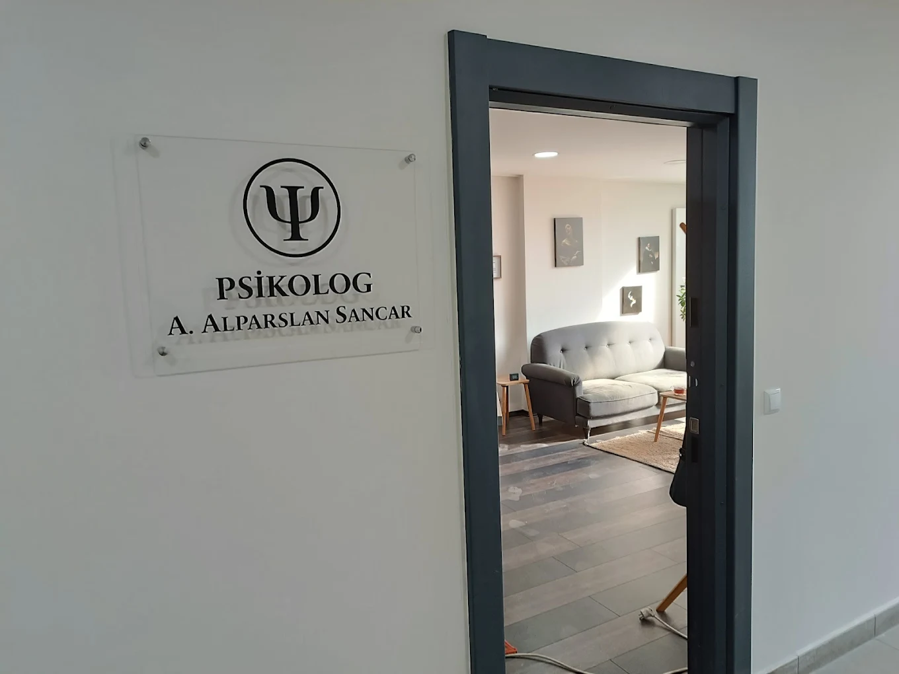
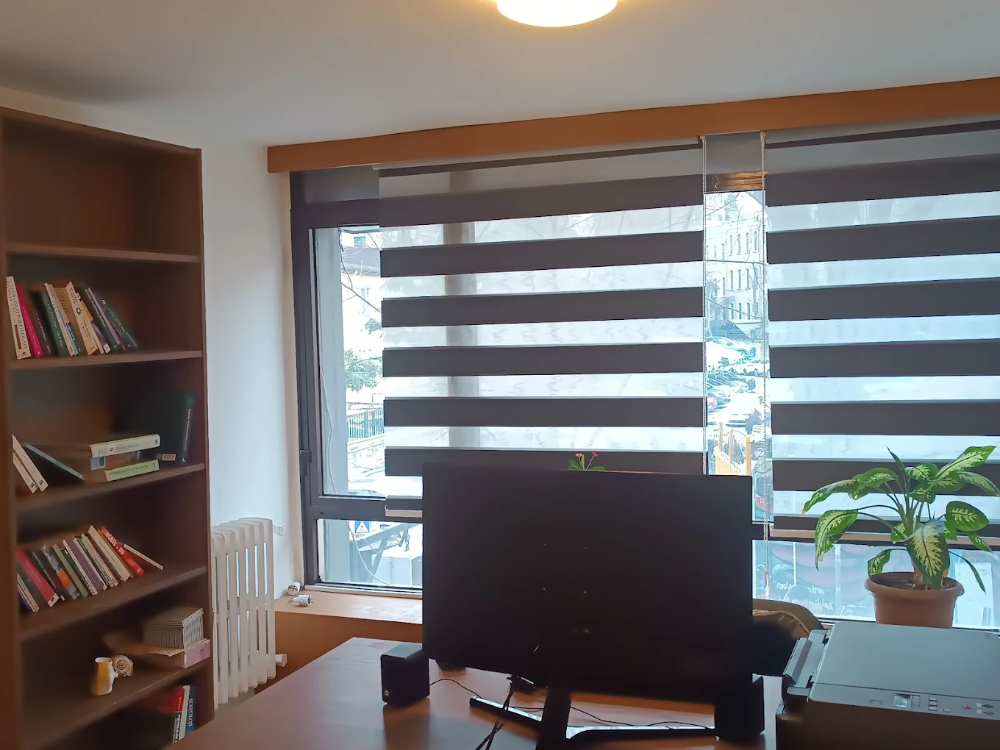
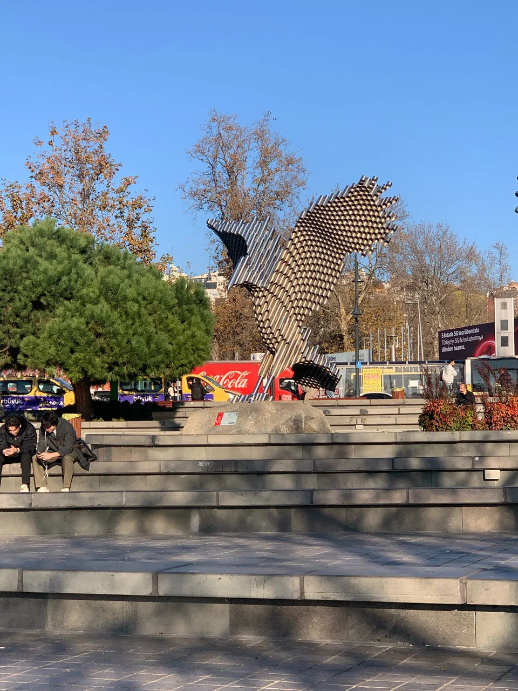

★★★★★
Beşiktaş terapi sürecinde ofisin huzurlu atmosferi ve profesyonel yaklaşım ilişkimizi çok daha sağlıklı yürütmemizi sağladı.
Online terapi Beşiktaş ile İstanbul içi veya şehir dışından düzenli psikoterapi alabilirsiniz. Beşiktaş psikolog merkezli planlamada görüşme linki, gizlilik hatırlatmaları ve teknik öneriler ilk mesajda paylaşılır; dilerseniz bireysel terapi Beşiktaş yüz yüze seanslarıyla hibrit ilerlenir.
Seyahat, yoğun iş takvimi, bakım sorumluluğu veya fiziksel olarak ofise gelmenin zor olduğu dönemlerde online psikolog görüşmeleri sürekliliği korur. Bazı danışanlar ilk görüşmeleri yüz yüze yapıp sonrasında çevrim içi devam etmeyi seçer.
Stabil internet, kulaklık ve kesintisiz bir oda önerilir. Çevrenizde başka kişiler yokken görüşmeye katılın; bildirimleri kapatın. Görüşmeler etik çerçevede gizli tutulur — yüz yüze Beşiktaş terapi ile aynı profesyonel standart geçerlidir.
Evet. Dönemsel olarak yüz yüze terapi İstanbul ofisinde seanslarla birleştirilebilir. Psikolog randevu Beşiktaş sayfasında takvim ve ücret çerçevesini bulabilirsiniz.
Güvenli bağlantı ve mahrem ortam koşulları sağlandığında evidans temelli süreç yüz yüze ile uyumludur.
İlk iletişimde size uygun, güvenli görüntülü platform önerilir.
Evet; İstanbul psikolog merkezli olsa da online modül Türkiye genelinden erişime uygundur.
Görüntülü platform, gizlilik ve hibrit (yüz yüze + online) planını birlikte netleştiririz.
Ofis ve Beşiktaş merkez görselleri; profesyonel terapi ortamı ve ulaşım hissi yansıtır.



Google’da yorumlar
Beşiktaş Psikolog — Google İşletme Profili